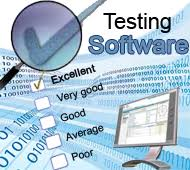

Información General Del Sitio

Este sitio esta contruido para facilitar a los estudiantes de la UNAD los recursos y una serie de instrucciones que seran de fundamental importacia en el proceso y aplicación de pruebas de software, el cual se encuentra construido en HTML y CCS3.
Concentrar la información de las técnicas y los métodos más relevantes en la aplicación de pruebas básicas de software como las pruebas funcionales y pruebas del sistema.
Objetivos del OVI
Construir un Sitio donde los estudiantes de la UNAD puedan encontrar material interactivo, estragias, procesos y procedimientos para aplicar en la documentación y las diferentes tecnicas utilizadas en pruebas de Software.
Mostrar de manera detallada el proceso básico en pruebas de software como:
Planificación y control - Análisis y Diseño - Implementación y ejecución - Evaluación de criterios - Actividades de cierre de pruebas.
Dar a conocer los diferentes tipos de pruebas de software como:
Pruebas de caja Negra (Pruebas funcionales) –Pruebas no funcionales (Pruebas necesarias para medir las características de los sis.) – pruebas estructurales (Pruebas caja blanca) – pruebas de regresión (Corrección de defectos – pruebas de Mtto)
Objetivos del Curso
/
Que los estudiantes de la UNAD se fundamente teóricamente sobre las generalidades básicas del Diseños Web, para utilizar de forma correcta los lenguajes HTML5 y CSS3 para aplicarlos en la solución de problemas de construcción de Sitios Web, como tambien implementar servicios y sitios web a través de sistemas de control de versiones.